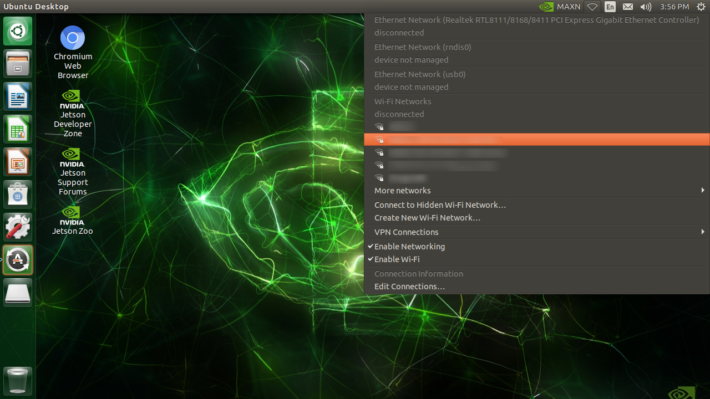
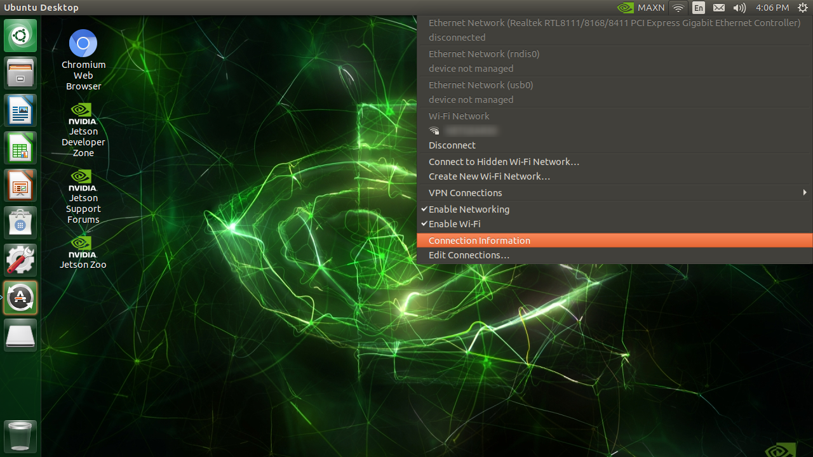
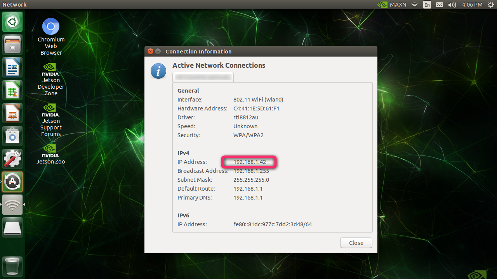
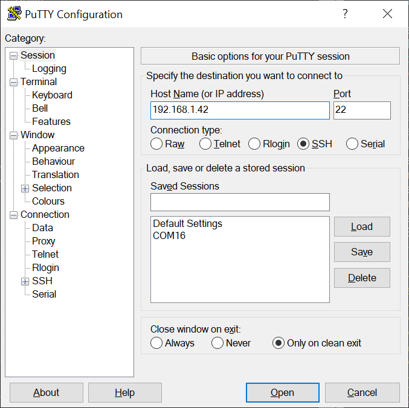
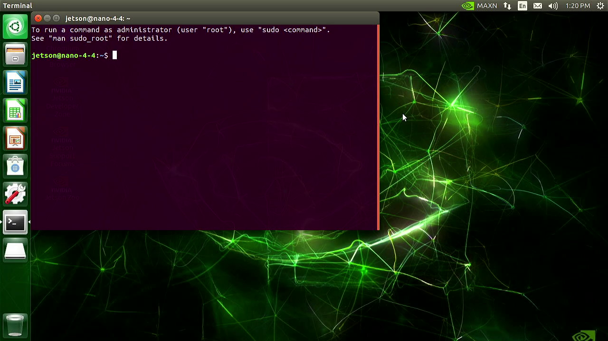
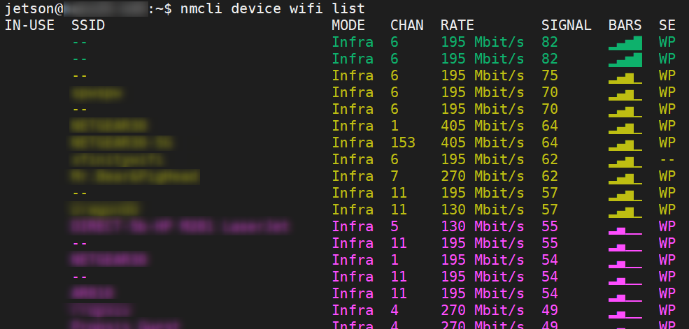

Wi-Fi connection setup
Info
You can skip this page if you already have a wireless connection to your JetBot from your computer.
To go through the actual example applications on JetBot, you interact with JetBot from your (laptop) PC through Wi-Fi network.
This document explains how you can initially set up the Wi-Fi connection on your Jetson.
Monitor-attached Mode
The easiest way to set up the Wi-Fi connection on your Jetson, is to operate on the GUI desktop.
For this you need to fisrt connect the following to the Jetson on your JetBot.
- HDMI monitor
- USB keyboard
- USB mouse
With this setup, you can use Jetson like a standard Linux computer.
We call this Monitor-attached Mode.
Hint
If you don't have above items handy, then you can also try the headless way of configuring Wi-Fi. Head down to the next section, Headless Mode.
Connect to Wi-Fi AP
If a Wi-Fi adaptor (either Intel 8265 M.2 card or a USB Wi-Fi dongle) is attached, you can configure the wireless network from the desktop.

Check IP address
After the connection established, check the IP address.

Note this IP address.

Verify the IP address
To test the IP address is valid and your Jetson is accesible, try connecting to the IP address from your separate (laptop) PC.
SSH server is enabled by default on Jetson.
Open your SSH client software (PuTTY, etc) on your PC, and try to connect the SSH server on the IP address.

This is how you connect to your JetBot using SSH client software.
Once you confirm you can connect to your Jetson remotely from your PC via Wi-Fi, you can now remove the HDMI monitor, keyboard and mouse from Jetson, and let your JetBot free!
And at this point, you are now using Jetson effectively in the Headless Mode.
Hint
Alternatively, even on the GUI deskop, you can open the terminal by pressing Ctrl + Alt + T keys, and follow the command-line based setup described below for headless setup.

Headless Mode
When you put your Jetson in a deployed system, like a mobile robot, it is often difficult to attach an HDMI monitor.
We can still control such Jetson remotely through network from a (laptop) PC, WHEN you already know the IP address.
We call this operation mode Headless Mode.
However you face a chiken-or-egg dillemna here, because you want to remotely login to the console to set up a Wi-Fi connection, but to do that you first need the IP address of your Jetson that you get after establishing the Wi-Fi connecton.
USB Device Mode
What comes handy here is USB Device Mode.
You connect your (laptop) PC and Jetson using a Micro-USB cable. (Type-A end goes to your PC, Micro-B end goes to Jetson)
Using this wired connection, you can access the terminal on Jetson from your (laptop) PC.
With USB Device Mode, Jetson presents 3 different USB Device Class end-points to the PC that it got connected to.
They function as
- USB mass storage device (you see
L4T-READMEdrive mounted on your PC, like a USB thumbdrive) - USB serial (like the common "FTDI" USB to serial adapter)
- USB network interface card (like a virtual Ethernet adapter)
With the virtual Ethernet adapter functinality, Jetson forms a virutal local Ethernet network with Jetson being 192.168.55.1 and your PC being 192.168.55.100.
So you can actually SSH login from your (laptop) PC by specifying 192.168.55.1, if you have already set up your acount (with username and password).
If you are using Jetson for the first time right after you flash your SD card, then you don't have this user account set up.
In that case, you want to use the USB serial functinality, and use your serial terminal software on your PC to have accesss to the Jetson's serial terminal.
So either way, with a Micro USB cable, you can have an access to Jetson's terminal.
Connect Wi-Fi using nmcli command
If a Wi-Fi adaptor (either Intel 8265 M.2 card or a USB Wi-Fi dongle) is attached, you can configure the wireless network using nmcli command.
You can first check if you want a wireless adapter on your system.
Look for wlan0.
$ nmcli device
DEVICE TYPE STATE CONNECTION
l4tbr0 bridge connected l4tbr0
wlan0 wifi disconnected --
eth0 ethernet unavailable --
dummy0 dummy unmanaged --
rndis0 ethernet unmanaged --
usb0 ethernet unmanaged --
lo loopback unmanaged --
Then you can list all the wirelss networks (SSDI) in the area.
$ nmcli device wifi list
IN-USE SSID MODE CHAN RATE SIGNAL BARS SE
-- Infra 6 195 Mbit/s 82 ▂▄▆█ WP
-- Infra 6 195 Mbit/s 82 ▂▄▆█ WP
-- Infra 6 195 Mbit/s 75 ▂▄▆_ WP
MY_WIFI_AP Infra 6 195 Mbit/s 70 ▂▄▆_ WP
-- Infra 6 195 Mbit/s 70 ▂▄▆_ WP
********* Infra 1 405 Mbit/s 64 ▂▄▆_ WP
************ Infra 153 405 Mbit/s 64 ▂▄▆_ WP
...

To connect to your wireless network (AP, access point), issue the commands below.
$ sudo nmcli device wifi connect <MY_WIFI_AP> password <MY_WIFI_PASSWORD>
Device 'wlan0' successfully activated with '2a26d5ca-****-****-****-**************'.
Check IP address
To check your IP address, use ifconfig.
Check the wlan0 part at the very bottom.
$ ifconfig
dummy0: flags=195<UP,BROADCAST,RUNNING,NOARP> mtu 1500
inet6 fe80::d854:8ff:fe87:e631 prefixlen 64 scopeid 0x20<link>
ether da:54:08:87:e6:31 txqueuelen 1000 (Ethernet)
RX packets 0 bytes 0 (0.0 B)
RX errors 0 dropped 0 overruns 0 frame 0
TX packets 24 bytes 3376 (3.3 KB)
TX errors 0 dropped 0 overruns 0 carrier 0 collisions 0
l4tbr0: flags=4163<UP,BROADCAST,RUNNING,MULTICAST> mtu 1500
inet 192.168.55.1 netmask 255.255.255.0 broadcast 192.168.55.255
inet6 fe80::1 prefixlen 128 scopeid 0x20<link>
inet6 fe80::943c:9dff:fe90:eb89 prefixlen 64 scopeid 0x20<link>
ether 96:3c:9d:90:eb:89 txqueuelen 1000 (Ethernet)
RX packets 15189 bytes 1343038 (1.3 MB)
RX errors 0 dropped 0 overruns 0 frame 0
TX packets 4344 bytes 411009 (411.0 KB)
TX errors 0 dropped 0 overruns 0 carrier 0 collisions 0
lo: flags=73<UP,LOOPBACK,RUNNING> mtu 65536
inet 127.0.0.1 netmask 255.0.0.0
inet6 ::1 prefixlen 128 scopeid 0x10<host>
loop txqueuelen 1 (Local Loopback)
RX packets 3954 bytes 287737 (287.7 KB)
RX errors 0 dropped 0 overruns 0 frame 0
TX packets 3954 bytes 287737 (287.7 KB)
TX errors 0 dropped 0 overruns 0 carrier 0 collisions 0
rndis0: flags=4163<UP,BROADCAST,RUNNING,MULTICAST> mtu 1500
inet6 fe80::943c:9dff:fe90:eb89 prefixlen 64 scopeid 0x20<link>
ether 96:3c:9d:90:eb:89 txqueuelen 1000 (Ethernet)
RX packets 15414 bytes 1360470 (1.3 MB)
RX errors 0 dropped 7 overruns 0 frame 0
TX packets 4378 bytes 667985 (667.9 KB)
TX errors 0 dropped 0 overruns 0 carrier 0 collisions 0
usb0: flags=4099<UP,BROADCAST,MULTICAST> mtu 1500
ether 96:3c:9d:90:eb:8b txqueuelen 1000 (Ethernet)
RX packets 0 bytes 0 (0.0 B)
RX errors 0 dropped 0 overruns 0 frame 0
TX packets 0 bytes 0 (0.0 B)
TX errors 0 dropped 0 overruns 0 carrier 0 collisions 0
wlan0: flags=4163<UP,BROADCAST,RUNNING,MULTICAST> mtu 1500
inet 192.168.1.58 netmask 255.255.255.0 broadcast 192.168.1.255
inet6 fe80::b5a0:c2e3:50bc:29a4 prefixlen 64 scopeid 0x20<link>
ether b4:4b:d6:23:9a:12 txqueuelen 1000 (Ethernet)
RX packets 26825 bytes 40675884 (40.6 MB)
RX errors 0 dropped 32746 overruns 0 frame 0
TX packets 16406 bytes 1673647 (1.6 MB)
TX errors 0 dropped 0 overruns 0 carrier 0 collisions 0
Verify the IP address
To test the IP address is valid and your Jetson is accesible, try connecting to the IP address from your separate (laptop) PC under the same network.
Open your SSH client software (PuTTY, etc) on your PC, and try to connect the SSH server using the IP address you obtained on the wireless adapter.
This is how you connect to your JetBot over Wi-Fi.
Once you confirm you can connect to your Jetson remotely from your PC via Wi-Fi, you can now remove the Micro USB cable and let your JetBot free!
Info
Next, you move on to either page below.
Once your JetBot software is configure, you should see JetBot's IP address on the small OLED display.
You would only need to come back to this step to re-connect to the network or to find the IP address when your JetBot fails to get the IP address and show the current IP address on the OLED display.